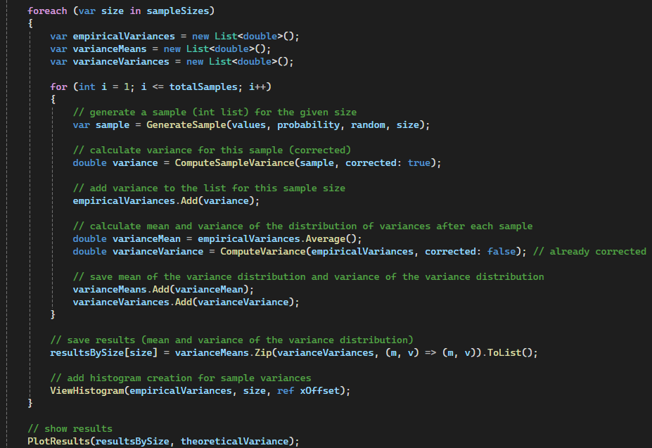

The sampling mean is the average of \( n \) observations from a population.
It's main properties are:
The sampling variance is an estimate of the population variance based on the sample.
The expected value of the sample variance equals the population variance: \[ E[S^2] = \sigma^2 \]
For a sample of size \( n \), the sample variance is computed as: \[ S^2 = \frac{1}{n-1} \sum_{i=1}^n (X_i - \bar{X})^2 \] The divisor \( n-1 \) (instead of \( n \)) ensures the unbiasedness of the estimate.
The sampling mean and variance are related, but they measure different aspects of the data:
For normally distributed populations, the sample mean and sample variance are independent.
These properties ensure that the sampling mean and variance provide accurate and reliable estimates of the population parameters when the sample size is sufficiently large.
Encryption methods are broadly categorized into symmetric-key and asymmetric-key systems.
Characteristics:
Characteristics:
Characteristics:
Characteristics:
Characteristics:
By adhering to these principles, encryption methods ensure the confidentiality, integrity, and authenticity of the data, even under statistical analysis.
Taking the basis of homework 7, graphs of the averages and variances of the empirical variance were
calculated and generated for the 1000 samples of 20, 30 and 100 throws of the same rigged die.
Graphs of the frequency distribution and empirical variance were also generated for the 3 sizes 20, 30 and
100.

This code generates the following graphs:
The distribution has a non-uniform probability.
Mean of the empirical variances: as the sample size increases, the mean of the empirical
variance moves closer to the theoretical variance (red line in the varinace'mean convergence graph).
Variance of the empirical variances: For a rigged die, the variance of the empirical
variance
will depend on the sample size. The larger the sample, the small
er the variance of the empirical
variances will be.
With small samples, the variance of samples can be very spread out, so it may vary a lot from one sample to
another.
With large samples, the distribution of variances will stabilise, and the variance of the samples will be
more concentrated around the theoretical value of the variance.
In summary, as the sample size increases, the distribution of sample variances becomes more concentrated around the theoretical variance. This can be observed in the three graphs below, where the third graph, for \( n = 100 \), shows a narrower and taller bell shape.
The ‘Optional Simulation’ button triggers the BtnSimulate_optional_Click
method, which also extracts the
text from the web pages and calls the OptionalAnalysis method.
This method converts letters to corresponding numbers and encodes the text using the modular
exponentiation
with the formula \[
E = L^e \mod P
\], where:
TryFindParameters method allows to determine the \( e \) and \( P \) values basing on encoded
values, in case these are not known.
possibleEs list contains candidate values for \( e = 3 \) and \( e = 65537 \), which are common
choices in
cryptography, the loops are done for P values in the range of 2 to 100 and for each combination of P and e,
the method tries to decode all values in encodedValues. We can see that retrieved values near the
"Optional Simulation" button correspond to the values assigned in the ModularExponentiation method
and showed in the legend.